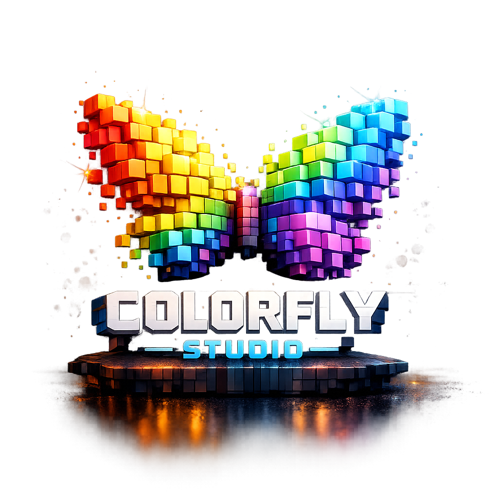

Colorfly Studio
Generador de Paletas
Generar paleta
Tamaño de paleta:
6 colores
8 colores
9 colores
Formato:
HSL
RGBA
Guardar paleta
Paletas guardadas
Limpiar paletas guardadas
Código HEX copiado ✔
Selector de color
Cerrar
Guardar paleta
Nombre de la paleta
Guardar
Cancelar